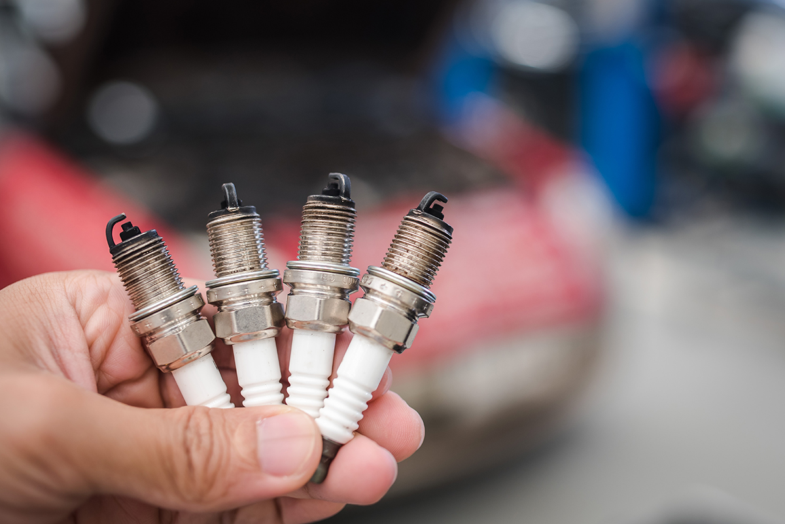
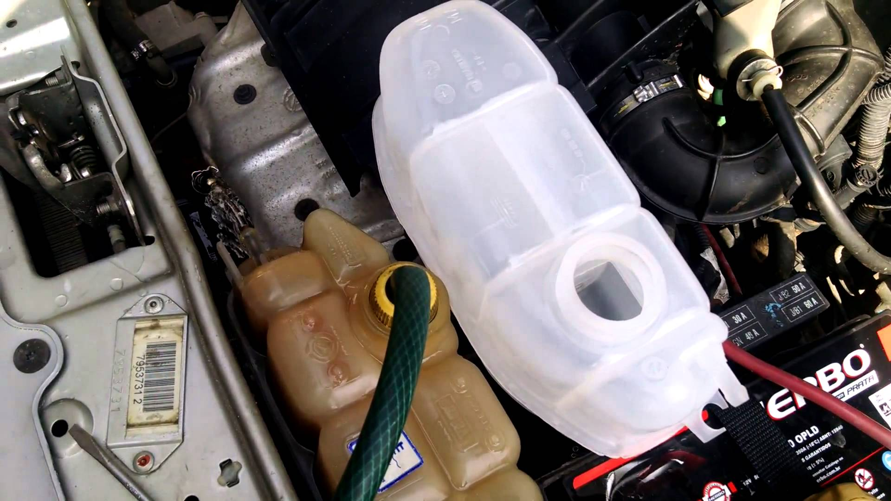
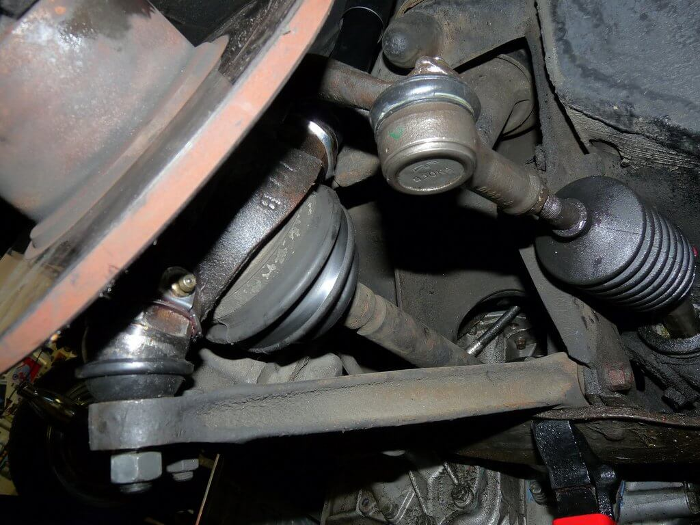
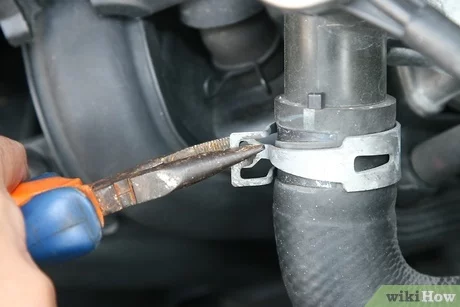
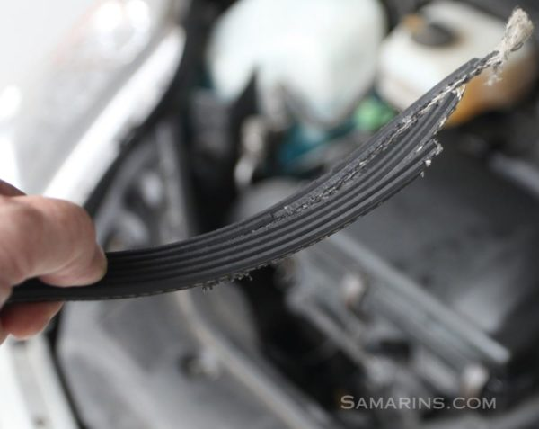
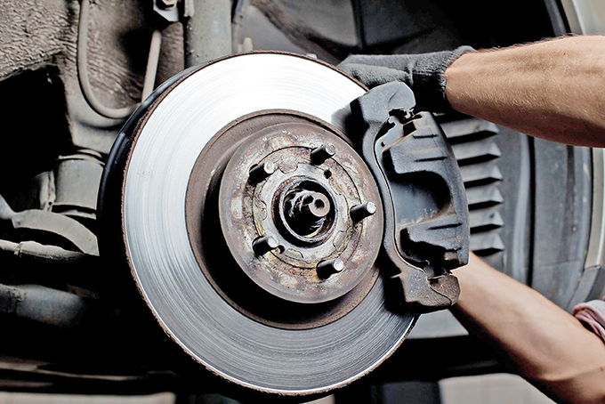
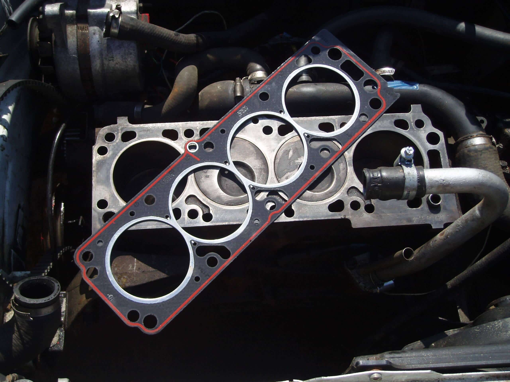

Troca de Velas
A substituição regular das velas de ignição é importante para garantir
uma ignição adequada da mistura ar-combustível, o desempenho ideal do motor,
economia de combustível e redução das emissões poluentes. É recomendável seguir as recomendações
do fabricante quanto ao intervalo de troca das velas de ignição, que pode variar de veículo para veículo.

Troca de Óleo
É importante seguir as recomendações do fabricante do veículo em relação ao intervalo de troca de óleo. Geralmente,
isso varia entre 5.000 e 10.000 quilômetros ou de acordo com um determinado período de tempo, como a cada 6 meses.
No entanto, se você dirige em condições severas, como em tráfego intenso, em áreas poeirentas ou em climas extremos,
pode ser necessário realizar a troca de óleo com mais frequência.

Sistema de Aferrecimento
É fundamental realizar a manutenção regular do sistema de arrefecimento, incluindo a verificação do nível e da qualidade do líquido de arrefecimento,
inspeção de vazamentos, limpeza do radiador e substituição do líquido de arrefecimento conforme as recomendações do fabricante do veículo.
Um sistema de arrefecimento em bom funcionamento é essencial para garantir o desempenho confiável do motor e evitar danos graves. Portanto, é importante monitorar

Pivo e Batentes
É recomendável seguir as recomendações do fabricante do veículo em relação à manutenção dos pivôs e batentes. Isso pode
incluir a inspeção regular, a lubrificação adequada, a substituição em caso de desgaste excessivo e o ajuste da folga,
se necessário. Um mecânico qualificado e experiente pode ajudar a realizar a manutenção e os reparos adequados nesses
componentes, garantindo assim um desempenho seguro e confiável do veículo.

Mola e Suspenção
Recomenda-se seguir as recomendações do fabricante do veículo em relação à verificação e manutenção das molas e suspensão.
Isso pode incluir a inspeção regular, a substituição em caso de desgaste excessivo e o ajuste adequado dos componentes.
É importante procurar um mecânico qualificado e experiente para realizar a verificação e os reparos necessários,
garantindo assim a segurança e o desempenho adequado

Mangueiras
Verifique regularmente o estado das mangueiras e substitua-as se apresentarem sinais de desgaste, danos ou vazamentos.
É importante utilizar mangueiras de alta qualidade e adequadas para cada aplicação específica do veículo.

Correias
Verifique regularmente o estado das correias e substitua-as conforme o intervalo de troca recomendado ou se apresentarem
sinais de desgaste, rachaduras, desgaste irregular ou tensão inadequada. É importante utilizar correias de alta qualidade e
adequadas para cada aplicação específica do veículo.

Freio
Recomenda-se seguir as recomendações do fabricante do veículo em relação à manutenção dos freios. Isso pode incluir
a verificação regular do desgaste das pastilhas ou sapatas de freio, a substituição adequada dos componentes desgastados,
a troca do fluido de freio conforme recomendado e a inspeção geral do sistema de freio.
Lembre-se de que a manutenção preventiva e a inspeção regular são essenciais para garantir que os freios estejam em boas
condições de funcionamento

Manutençoes preventivas
É importante seguir as recomendações do fabricante em relação às manutenções preventivas do motor. Consulte o manual
do proprietário para obter informações específicas sobre os intervalos de troca de óleo, filtros e velas de ignição.
Além disso, é recomendado procurar um mecânico qualificado para realizar as manutenções preventivas, pois eles têm o
conhecimento e as ferramentas adequadas para executar os procedimentos corretamente.